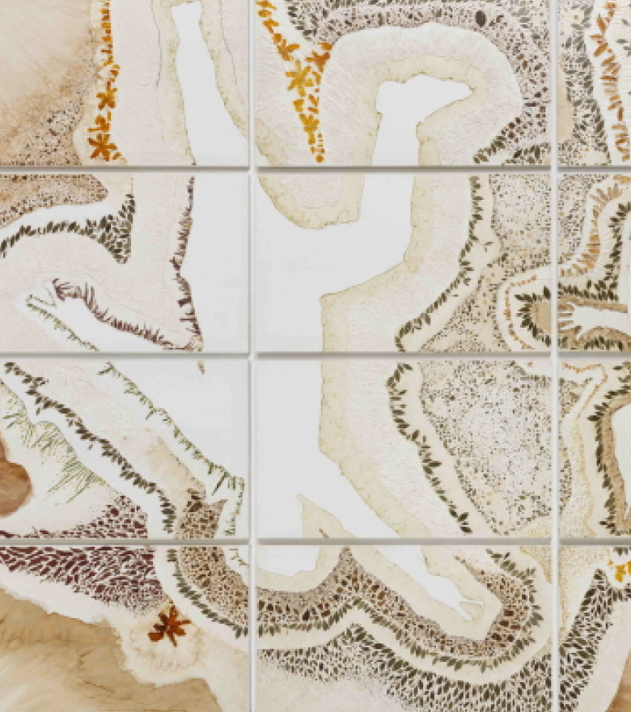
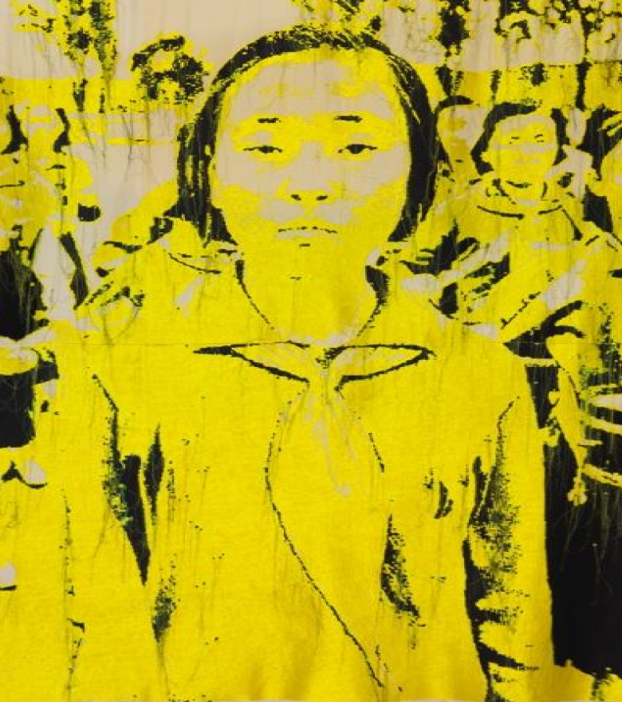
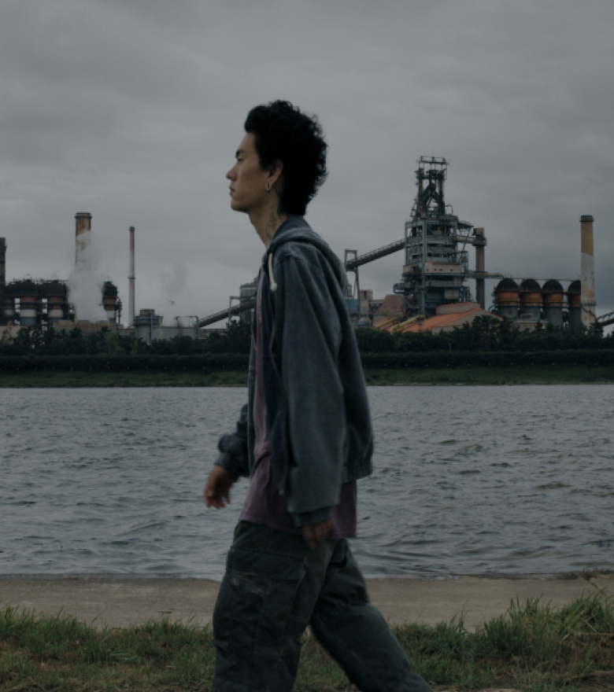
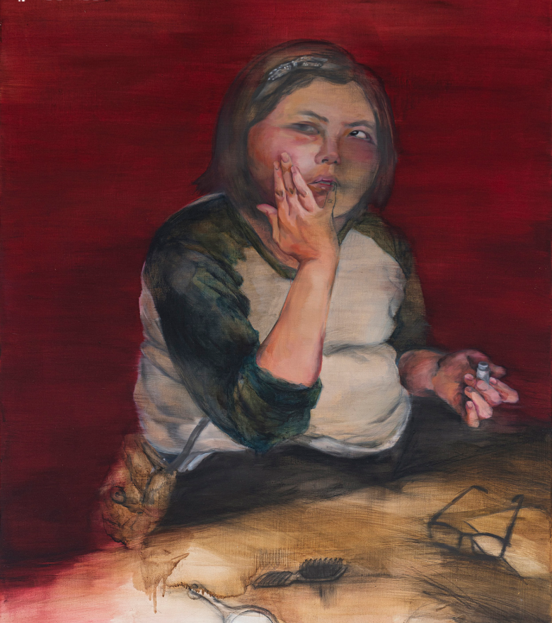
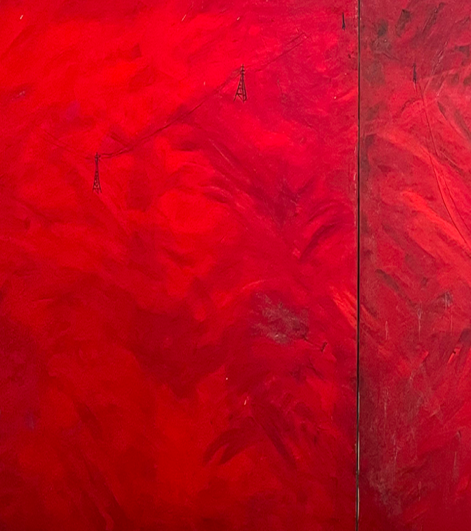
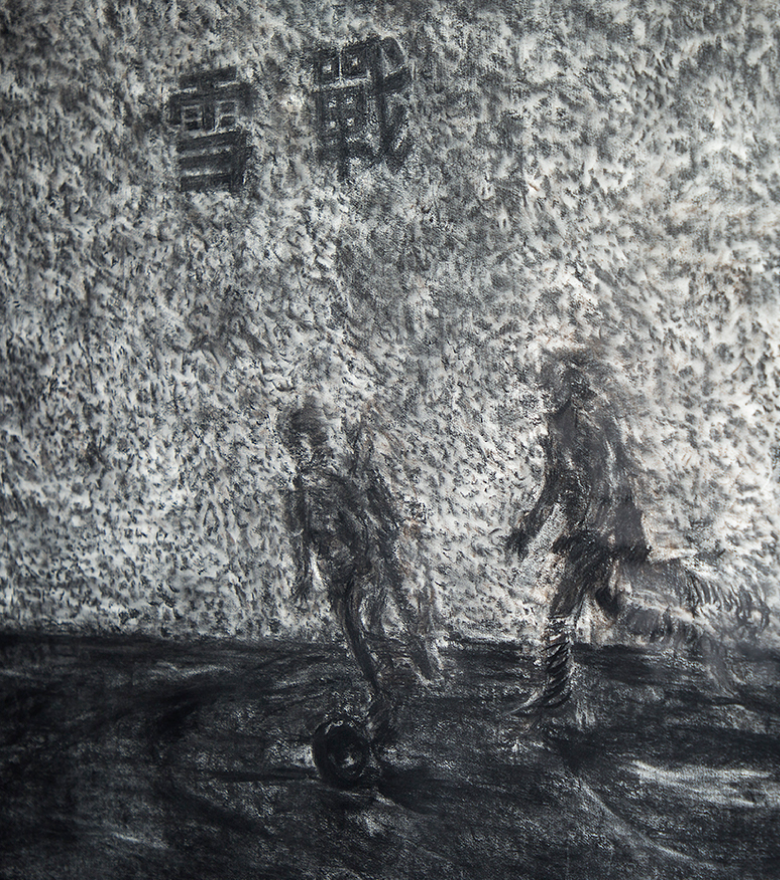

부산현대미술관 로고
Visit
전시 시간
온라인 예약
Exhibition
현재 전시
예정 전시
온라인 미술관
Event
현재/예정 프로그램
지난 프로그램
Collection
소장품 보기
모카이브
Store
Visit
전시 시간
온라인 예약
Exhibition
현재 전시
예정 전시
온라인 미술관
Event
현재/예정 프로그램
지난 프로그램
Collection
소장품 보기
모카이브
Store
KOR
ENG
서치박스
검색영역
검색
KOR
ENG
소장품보기
모카이브
소장품
Museum Collection
Search Collection
작품유형
뉴미디어
사진
입체·설치
영상설치
평면
단채널영상
다채널영상
제작년도
1980s
1990s
2000s
2010s
작품명
작가명
Search
View Detail
춤추는 미생물
View Detail
침묵하는 북
View Detail
풍경연구S #1
View Detail
너의 화장대
View Detail
고압선
View Detail
설전/雪戰
춤추는 미생물
304cm × 543cm
작가
김순임
등록번호
23310평40
제작년도
2019
재료 및 기법
한지, 물풀, 음식부산물
김순임(金順任, 1975-)은 각 지역의 자연과 그로 인한 사람의 이야기에 관심을 두고 작업하며 특유의 자연 오브제를 이용한 설치, 조각, 영상, 사진, 퍼포먼스, 드로잉 등으로 잘 알려져 있다. 작가는 2019년에 ‘사이언스 월든(Science Walden)’의 과학예술융합프로젝트의 레지던시 작가로 거주하면서 미생물에 대해 배우고 과학자와 교류하는 경험을 하게 되었다. <춤추는 미생물>은 당시의 경험을 토대로 제작한 작품으로 당시 같은 프로젝트에 참여했던 작가들과 함께 섭취한 음식물들을 소재로 하고 있다. 인간이 인지하지 못하는 미생물의 세계가 지구의 일부를 구성하고 모두가 연결되어 있다는 의식 아래 음식부산물을 이용해 음식 안에서 번식, 교류하는 미생물을 상상하고 이를 사람들의 몸동작으로 표현한 작품이다.

침묵하는 북
297cm × 345cm
작가
홍영인
등록번호
23315평45
제작년도
2014
재료 및 기법
면 위에 자수
홍영인(洪英仁, 1972-)은 영국을 본거지로 유럽과 한국으르 오가며 활동하면서 사회적 불평등, 경계에 대한 문제의식을 바탕으로 설치, 퍼포먼스, 드로잉, 자수, 사운드 등 다양한 매체를 이용하여 작업한다. 특히 아시아 여성 직공의 저임금 노동인 ‘바느질’과 순수예술에서 배제된 ‘자수 공예’로 작업하는 것으로 알려져 있다. <침묵하는 북>은 작가의 ‘North Korea’ 연작 중 첫 번째 작업으로 1974년 내셔널 지오그래픽 잡지에 출판한 이미지를 이용한 작품이다. 한국전쟁 이후로 노출된 최초의 북한 이미지이며 운동장을 행진하며 연주하는 북한의 소녀들을 담았다. 북한의 희귀한 모습을 복잡한 자수작업으로 옮김으로써 역사적 시간을 포착하고 현재의 관점에서 이것을 해석해보고자 하는 작품이다.

풍경 연구S #1
10분 42초
작가
강신대
등록번호
23307다46
제작년도
2023
재료 및 기법
3채널 비디오, 컬러, 무성
강신대(姜信大, 1988-)는 페이스북, 트위터, 유튜브 등 현재 우리에게 익숙한 시청각 미디어에서의 이미지 생산, 유통, 소비 시스템을 포착해 자본주의 사회 시스템을 비틀고자 한다. <풍경 연구S #1> 속에는 공장이 늘어선 강변을 배경으로 제자리를 걷는 행위를 반복함에 따라 더 이상 나아가지 못하고 같은 배경만이 비춰진다. 이 장면은 생태 환경적 행위가 자본주의라는 컨베이어 벨트의 동력이 되고, 오늘의 풍경이 무한 반복되는 것을 은유하는 것이다.

너의 화장대
145.5cm × 112.2cm
작가
문지영
등록번호
21262평30
제작년도
2016
재료 및 기법
캔버스에 유채
문지영은 사회로부터 배제되거나 주변적인 존재와 이들을 향한 폭력적 시선에 대해 작업하는 부산작가이다. 이 작품은 발달장애를 가진 작가의 동생을 그린 작품으로 언니인 작가의 결혼으로 새 식구를 맞이하면서 자신을 단장하기 시작한 모습으로부터 시작된 작업이다. 동생 또한 또래의 여성과 다름없이 꾸미는 것에 대한 욕망을 지녔다는 사실을 인식하고, 과연 ‘보통’의 기준은 무엇인가라는 질문을 다시 한번 던지고 있다. 이전의 작업들과는 달리 유화를 묽게 사용하고 화면의 평면성이 도드라지도록 표현 했다.

고압선
234cm × 91cm
작가
정진윤
등록번호
21265평33
제작년도
1985
재료 및 기법
캔버스에 유화
정진윤(鄭鎭潤, 1954~2007)은 1954년 부산에서 출생하여 부산 형상미술의 형성에 많은 역할을 한 작가로 그리기를 통해 정치·경제·문화 전반에 대한 신랄한 풍자와 함께 은유적 해석의 지형을 넓힌 작품을 선보였다. 즉 작가로서 전시와 작품 제작에만 관심을 한정시키지 않고, 한 시대의 상황을 어떻게 미술이라는 어법 속에서 이야기하고 공유할 수 있을 것인지에 대해 고민하였다. 정진윤은 미술 포럼 등을 통해, 미술계 뿐 아니라 사회적 인식을 새롭게 요구하고 미술 운동에도 깊이 관여하였다. 작가는 1980년대 중반부터 현실과 가상의 경계 불명의 풍경, 특히 폐허의 도시 풍경에 집중하기 시작하는데, 이 작품은 이 시기에 제작된 작품이다. <고압선>의 화면 전체는 붉은 색으로 거친 붓질이 드러나게 처리되어 있는데, 붉은 색조는 특정한 공간에 대한 표현이지만 어떤 구체성은 읽기는 힘들다. 오른쪽 아래 모서리에 작은 터널을 설정하고 그 주위로 녹색과 푸른 색을 배치한다. 가로등이 있는 입구에서 인물들은 어떤 개인적 의사나 표정도 없이 묵묵히 터널을 향해 걷고 있다. 그가 제시하는 상황은 얼핏 이해가 가면서도 자세히 들여다보면 구체성이 전혀 없는 이해하기 힘든 이질적인 것의 교차다. 이런 이질적인 교차는 강한 대비 효과와 함께 1980년대 중반이 지나면서 작가의 어법으로 자리 잡는다.

설전/雪戰
120cm × 200cm
작가
최대진
등록번호
21263평31
제작년도
2019
재료 및 기법
종이에 목탄(액자 포함)
최대진은 드로잉을 기반으로 일상의 이야기들을 여러 매체로 다양하게 구성하는 작업을 보여주는 작가이다. 이 작품은 거친 눈보라 아래서 축구경기를 하고있는 선수들의 모습을 묘사하였으며 목탄의 부드러운 질감을 이용해 흐리게 표현함으로써 기존의 사실성이 강했던 회화에서 새로운 미학적 시도를 하였다.
